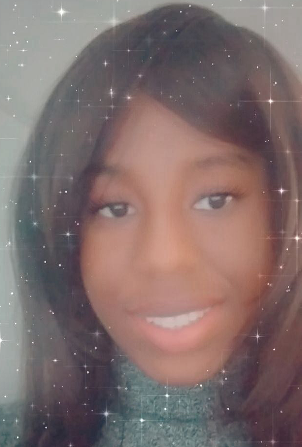

This fashion illustration is inspired by elegance and royalty. I used Adobe Illustrator and Pinterest as references for this artwork. The piece will emphasize graceful composition, soft color harmony, and refined character design, while showcasing digital illustration techniques and a strong attention to detail.

A digital fan art illustration using Procreate of Killua that explores dramatic lighting, glowing visual effects, and expressive character rendering. The artwork emphasizes mood, contrast, and anime-inspired styling to capture the character's powerful energy.

This is a dreamy digital artwork created in Photoshop, featuring two dancers beneath a glowing moonlit sky. The piece utilizes vibrant colors and dramatic lighting to convey fluid movement, capturing a moment of romance and elegance. It showcases the artist's skills in digital painting, composition, and visual storytelling.
